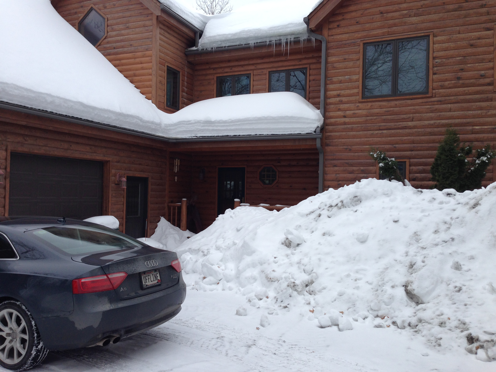
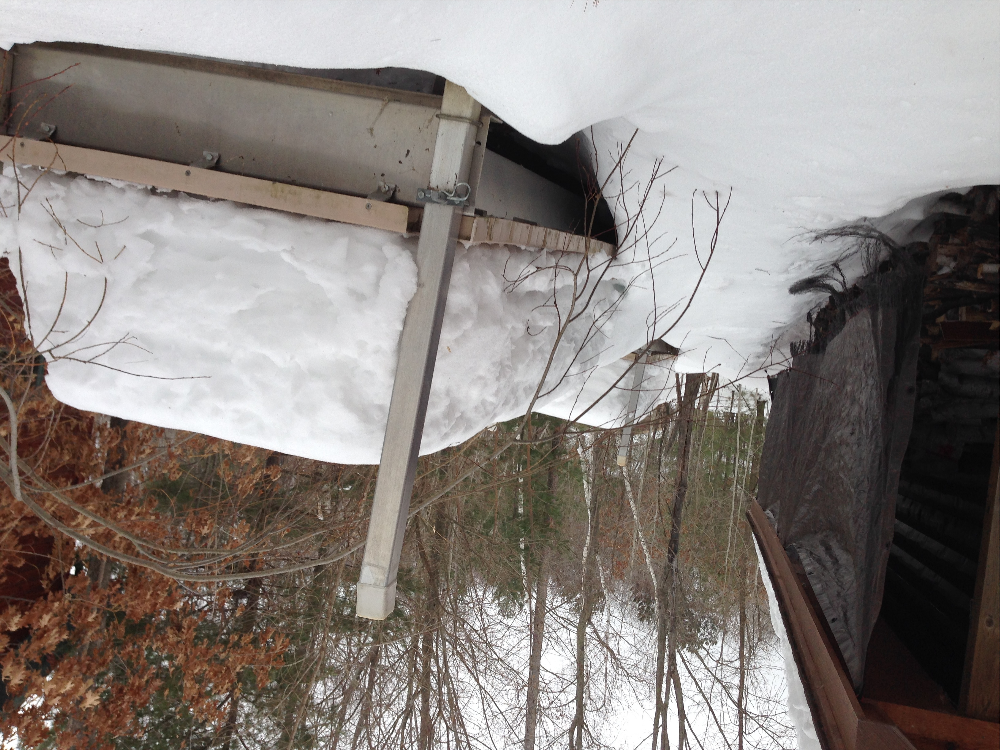
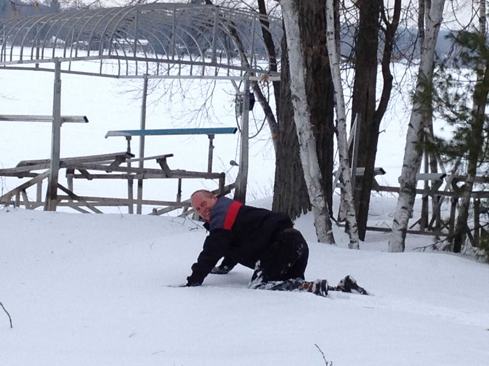
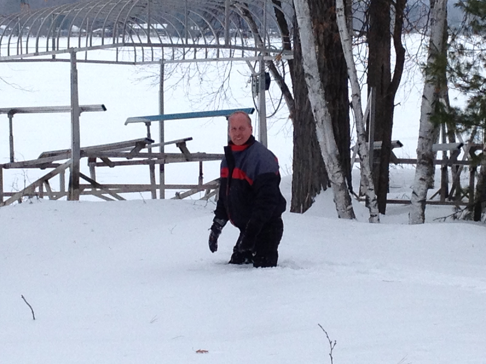

The Long Winter
When I was little, I read all of the Laura Ingalls Wilder books, including The Long Winter. That was the winter of 1880-1881 in case you are wondering. Lately my reading tastes lean more towards the Game of Thrones and the coming long winter in that story. Yesterday I arrived back in Minnesota after a chilly week in Atlanta, You will note by the date it is already the 8th of March. I'm writing this simply to document how much snow we've had here at Bone Lake this winter! As I pulled onto Indian Point road, I saw this:

Ok, I'd been seeing road signs totally buried in huge snow drifts since I turned North off highway 8, so I wasn't totally surprised that all the signs were buried. I wondered what our driveway would look like.

Well, guests are not going to have much of a view out the guest bedroom window, or the downstairs bathroom I guess. I wonder how long this will last? We might have to start a pool, to see when the last of the snow finally melts.
Luckily we had plenty of wood inside to light a fire, because I really would not want to wade through all of this to restock.

The webcam down by the lake has not been communicating for a while now, so I decided to make the trek down to the lake to see if I could reboot it and get it to talk to the wireless again. Yikes, the snow was up to my hips. Which nearly resulted in a trashed iPhone due to snow getting in my pockets and down my pants. (Sorry for that image) It turns out that even a tiny bit of moisture inside the earphone jack will make the iPhone think you have headphones plugged in. This disables the earpiece, and makes phone calls pretty tricky.
 
Here's hoping that March goes out like a Lamb and we can get back to making pizza in the pizza oven before the Fourth of July!
Comments